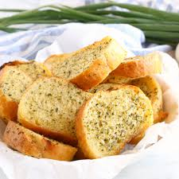

Home
Garlic Bread

Garlic bread is the ultimate side dish, bursting with rich, buttery, and aromatic flavors. Crisp on the outside and soft on the inside, it’s made by slathering slices of crusty bread with a luscious mixture of melted butter, minced garlic, and fresh parsley. A sprinkle of salt enhances the savory notes, while optional Parmesan adds a nutty, cheesy depth.
As it bakes, the garlic mellows, infusing the bread with a warm, earthy aroma. The golden, toasted edges provide a satisfying crunch, perfectly complementing the pillowy, buttery interior. Served warm, it’s the perfect partner for soups, pasta, or simply enjoyed on its own.
Ingredients
- 1 loaf of crusty bread (such as French bread or baguette)
- 1/2 cup (1 stick) unsalted butter, softened
- 4-5 cloves garlic, minced
- 2 tablespoons fresh parsley, chopped
- 1/4 teaspoon salt
- Optional: 1/4 cup grated Parmesan cheese
- Optional: A pinch of dried oregano or basil for extra flavor
Steps
- Preheat oven to 375°F (190°C)
- Mix butter, garlic, parsley, salt, and Parmesan (if using) in a bowl
- Slice the bread into 1-inch thick pieces
- Spread the garlic butter mixture generously on each slice
- Place bread on a baking sheet and bake for 10–12 minutes, until golden and crispy
- Serve warm and enjoy!